Yolov5模型训练¶
YOLOv5 🚀是一种深度学习模型，用于物体检测任务。它的全称是“你只看一次”（You Only Look Once），可以快速且准确地识别图像中的物体并标记它们的位置。
Yolov5的配置使用思路¶
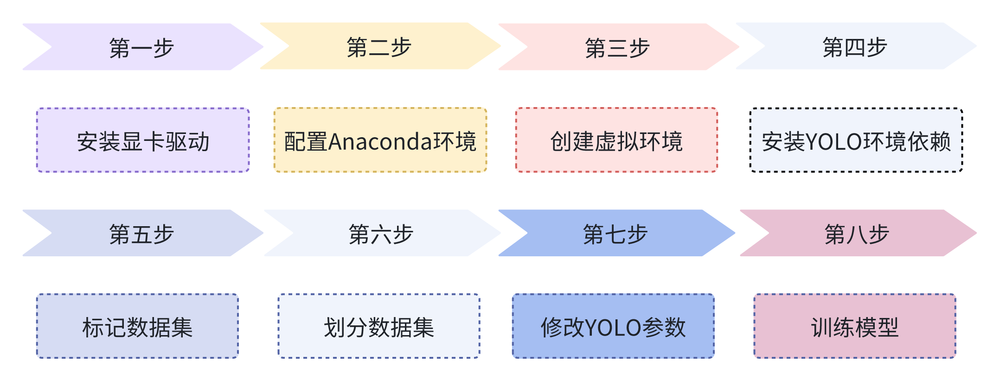
安装显卡驱动¶
电脑版本不同可能有些名称不一样，主要是找到设备管理器。
确定显卡版本¶
找到控制面板→硬件与声音→设备管理器→显示适配器→显卡版本
这里显示版本，说明电脑有英伟达的显卡
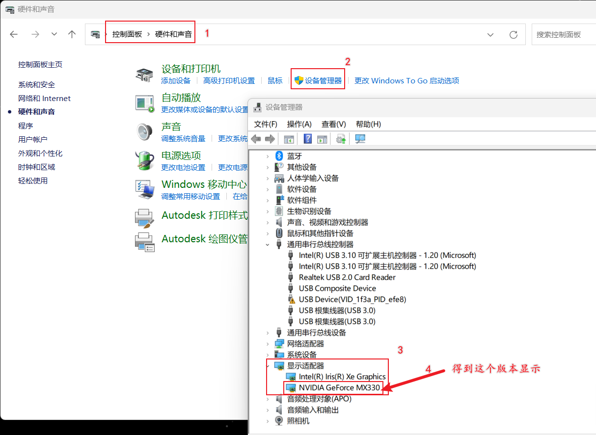
然后可以去英伟达驱动控制面板，再查看一下具体版本号。
安装显卡驱动¶
下载地址L：官方驱动 | NVIDIA
安装（更新）好了显卡驱动以后。按下win+R组合键，打开cmd命令窗口，查看最高支持的CUDA版本
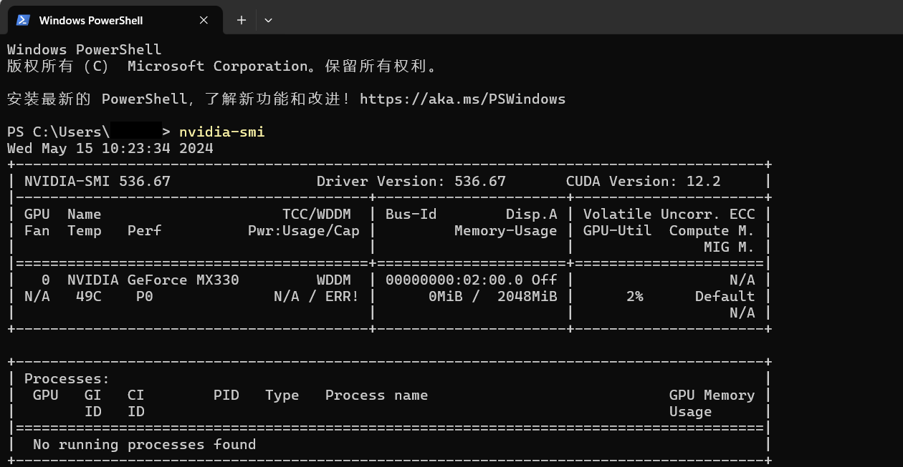
Anaconda环境配置¶
Python环境配置：
链接：https://pan.baidu.com/s/1WBBtduC-grJw9ZM88HqXfg?pwd=cmzz 提取码：cmzz
添加解释器
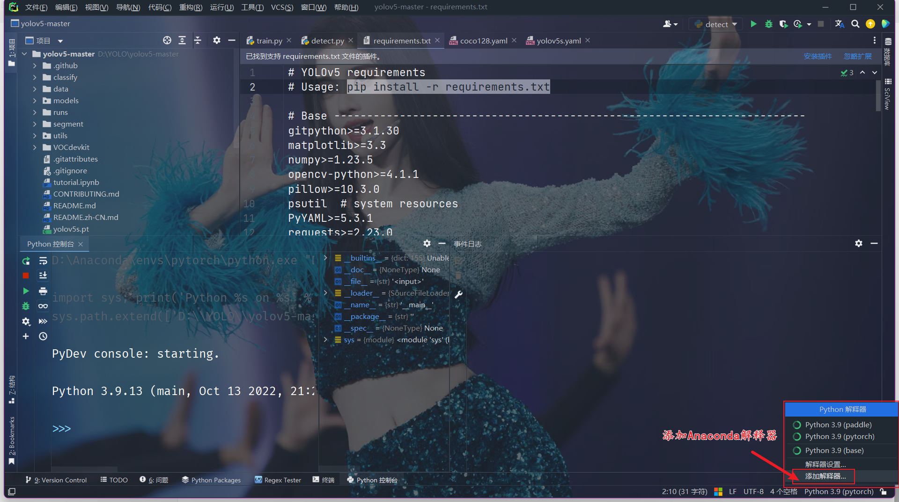
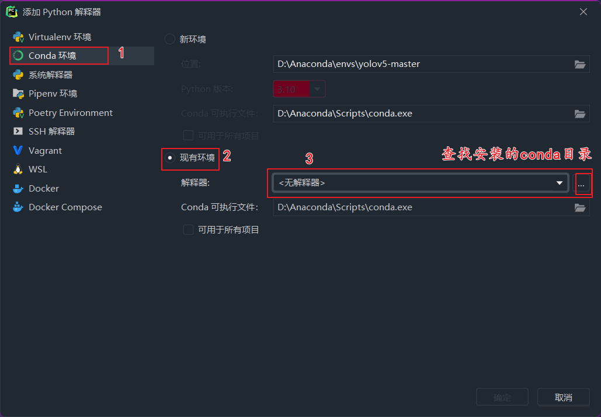
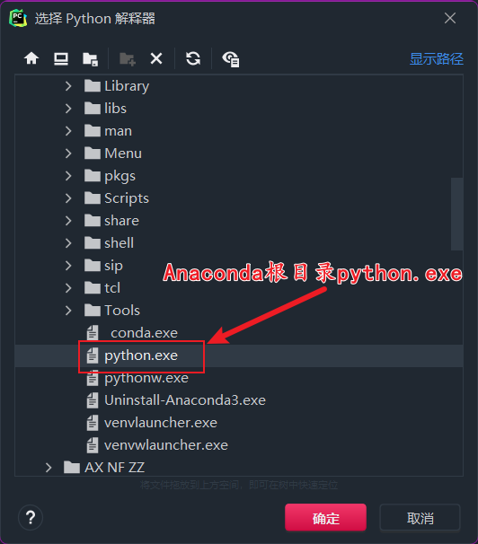
创建虚拟环境¶
查看虚拟环境¶
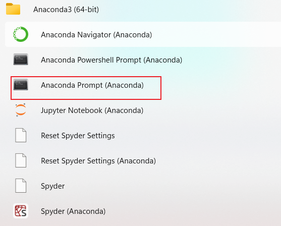
这里有一个重要命令，查看当前的虚拟环境数量，默认只有一个base(我这里安装过其他虚拟环境)
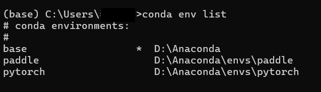
创建pytorch虚拟环境¶
！！！首先查看一下自己python版本
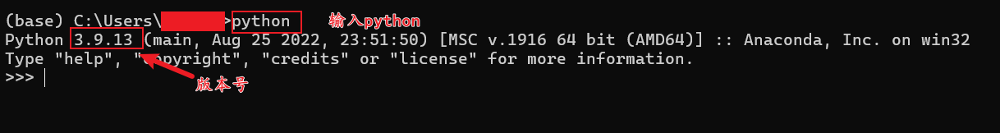
输入以下代码退出python
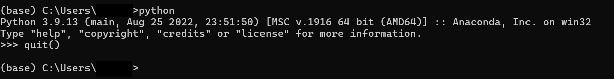
创建虚拟环境，输入以下命令，注意python版本和自己的一致
输入y
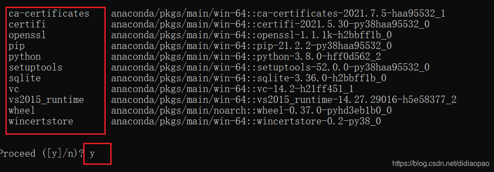
再次用前面的命令查看会多一个环境，使用下面命令激活环境
更换镜像源¶
清华源
conda config --add channels https://mirrors.tuna.tsinghua.edu.cn/anaconda/pkgs/free/
conda config --add channels https://mirrors.tuna.tsinghua.edu.cn/anaconda/pkgs/main/
conda config --add channels https://mirrors.tuna.tsinghua.edu.cn/anaconda/cloud/pytorch/
conda config --set show_channel_urls yes
下载pytorch¶
官网：PyTorch
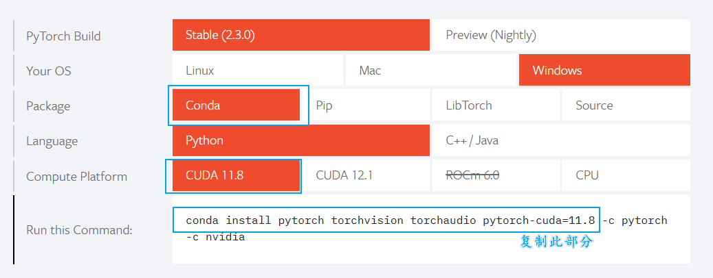
等待下载完成即可。
切换解释器¶
使用Anaconda环境配置部分内容添加解释器，并切换到pytorch解释器。
安装yolov5依赖¶
下载yolov5源代码¶
yolov5下载地址： YOLOv5 🚀
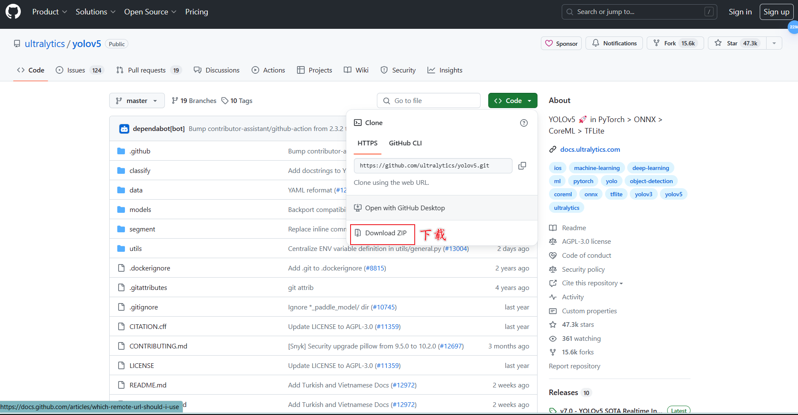
安装依赖¶
以工程打开yolov5文件夹
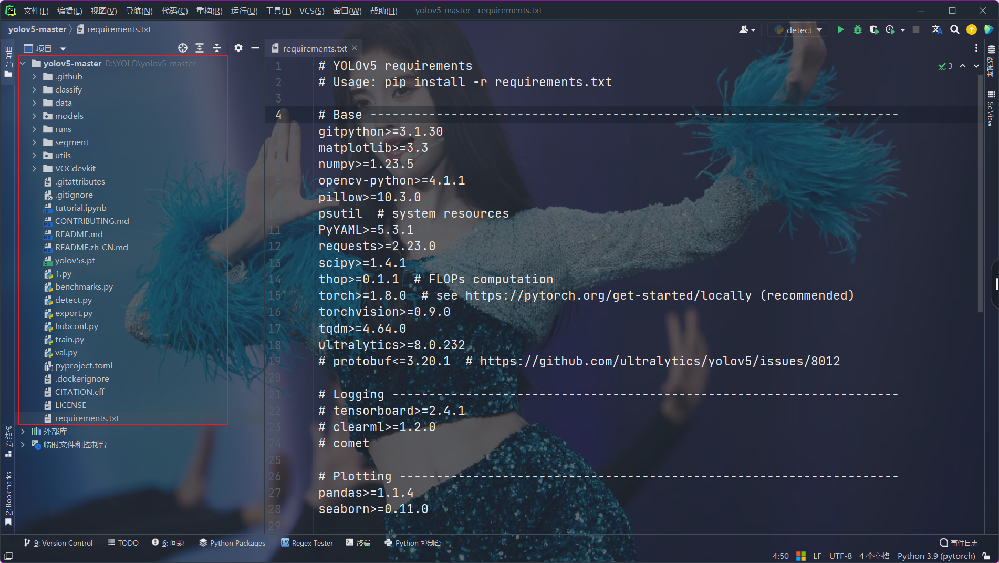
安装依赖
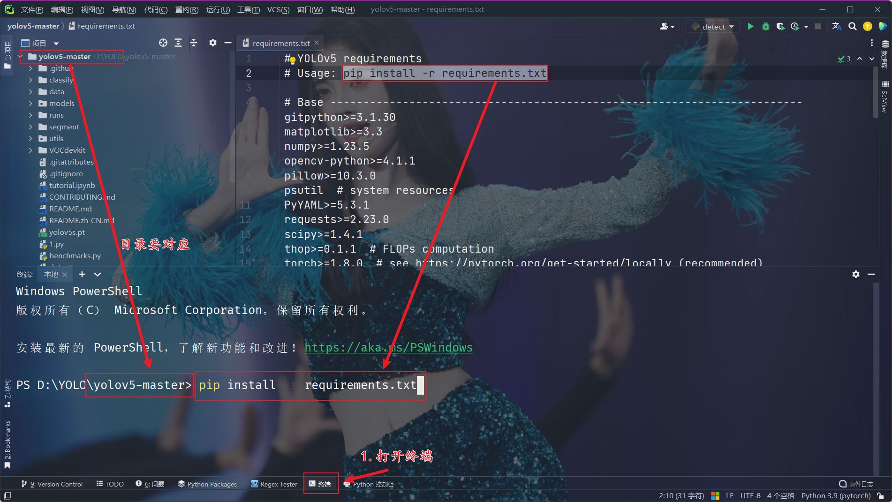
如果下载比较慢，可以使用中科大镜像源，永久替换
验证¶
终端输入命令
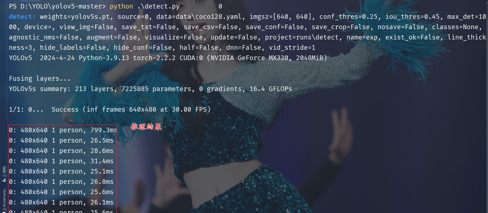
标记数据集¶
安装labelimg¶
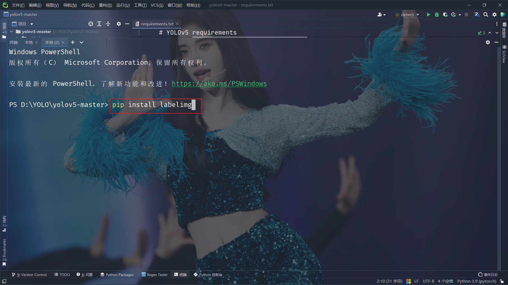
标记数据集¶
创建文件夹结构---创建文件夹VOCdevkit，再次文件夹下新建VOC2007，其他如下
├── VOC2007
│├── JPEGImages 存放需要打标签的图片文件
│├── Annotations 存放标注的标签文件
│├── predefined_classes.txt 定义自己要标注的所有类别
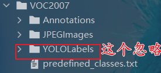
根据上面标注，把照片放到JPEGImages文件夹
将要标注的所有类别放在predefined_classes.txt文件
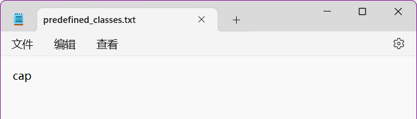
在终端中打开labelimg
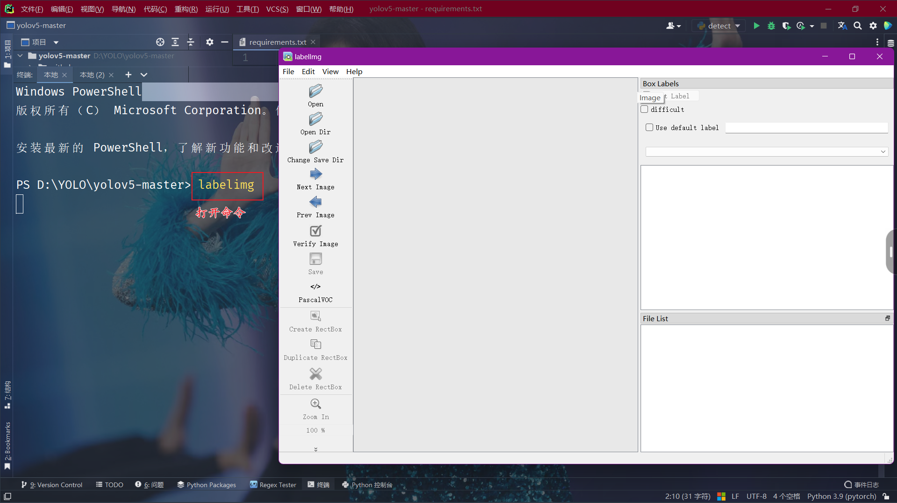
一些常用快捷键：
- A：切换到上一张图片
- D：切换到下一张图片
- W：调出标注十字架
- del ：删除标注框框
- Ctrl+u：选择标注的图片文件夹
- Ctrl+r：选择标注好的label标签存在的文件夹

划分数据集¶
这一步需要将标记好的照片和标签按一定比例划分为测试集和训练集，用于后续模型训练。
⚠⚠⚠---照片和标签数量和名称要一直，否则会出错。
代码参数修改¶
划分数据集代码如下：
import xml.etree.ElementTree as ET
import pickle
import os
from os import listdir, getcwd
from os.path import join
import random
from shutil import copyfile
classes = [
"cap"
]
TRAIN_RATIO = 80
def clear_hidden_files(path):
dir_list = os.listdir(path)
for i in dir_list:
abspath = os.path.join(os.path.abspath(path), i)
if os.path.isfile(abspath):
if i.startswith("._"):
os.remove(abspath)
else:
clear_hidden_files(abspath)
def convert(size, box):
dw = 1. / size[0]
dh = 1. / size[1]
x = (box[0] + box[1]) / 2.0
y = (box[2] + box[3]) / 2.0
w = box[1] - box[0]
h = box[3] - box[2]
x = x * dw
w = w * dw
y = y * dh
h = h * dh
return (x, y, w, h)
def convert_annotation(image_id):
in_file = open('VOCdevkit/VOC2007/Annotations/%s.xml' % image_id, encoding='utf-8')
out_file = open('VOCdevkit/VOC2007/YOLOLabels/%s.txt ' % image_id, 'w')
tree = ET.parse(in_file)
root = tree.getroot()
size = root.find('size')
w = int(size.find('width').text)
h = int(size.find('height').text)
for obj in root.iter('object'):
difficult = obj.find('difficult').text
cls = obj.find('name').text
if cls not in classes or int(difficult) == 1:
continue
cls_id = classes.index(cls)
xmlbox = obj.find('bndbox')
b = (float(xmlbox.find('xmin').text), float(xmlbox.find('xmax').text), float(xmlbox.find('ymin').text),
float(xmlbox.find('ymax').text))
bb = convert((w, h), b)
out_file.write(str(cls_id) + " " + " ".join([str(a) for a in bb]) + '\n')
in_file.close()
out_file.close()
wd = os.getcwd()
wd = os.getcwd()
data_base_dir = os.path.join(wd, "VOCdevkit/")
if not os.path.isdir(data_base_dir):
os.mkdir(data_base_dir)
work_sapce_dir = os.path.join(data_base_dir, "VOC2007/")
if not os.path.isdir(work_sapce_dir):
os.mkdir(work_sapce_dir)
annotation_dir = os.path.join(work_sapce_dir, "Annotations/")
if not os.path.isdir(annotation_dir):
os.mkdir(annotation_dir)
clear_hidden_files(annotation_dir)
image_dir = os.path.join(work_sapce_dir, "JPEGImages/")
if not os.path.isdir(image_dir):
os.mkdir(image_dir)
clear_hidden_files(image_dir)
yolo_labels_dir = os.path.join(work_sapce_dir, "YOLOLabels/")
if not os.path.isdir(yolo_labels_dir):
os.mkdir(yolo_labels_dir)
clear_hidden_files(yolo_labels_dir)
yolov5_images_dir = os.path.join(data_base_dir, "images/")
if not os.path.isdir(yolov5_images_dir):
os.mkdir(yolov5_images_dir)
clear_hidden_files(yolov5_images_dir)
yolov5_labels_dir = os.path.join(data_base_dir, "labels/")
if not os.path.isdir(yolov5_labels_dir):
os.mkdir(yolov5_labels_dir)
clear_hidden_files(yolov5_labels_dir)
yolov5_images_train_dir = os.path.join(yolov5_images_dir, "train/")
if not os.path.isdir(yolov5_images_train_dir):
os.mkdir(yolov5_images_train_dir)
clear_hidden_files(yolov5_images_train_dir)
yolov5_images_test_dir = os.path.join(yolov5_images_dir, "val/")
if not os.path.isdir(yolov5_images_test_dir):
os.mkdir(yolov5_images_test_dir)
clear_hidden_files(yolov5_images_test_dir)
yolov5_labels_train_dir = os.path.join(yolov5_labels_dir, "train/")
if not os.path.isdir(yolov5_labels_train_dir):
os.mkdir(yolov5_labels_train_dir)
clear_hidden_files(yolov5_labels_train_dir)
yolov5_labels_test_dir = os.path.join(yolov5_labels_dir, "val/")
if not os.path.isdir(yolov5_labels_test_dir):
os.mkdir(yolov5_labels_test_dir)
clear_hidden_files(yolov5_labels_test_dir)
train_file = open(os.path.join(wd, "yolov5_train.txt"), 'w')
test_file = open(os.path.join(wd, "yolov5_val.txt"), 'w')
train_file.close()
test_file.close()
train_file = open(os.path.join(wd, "yolov5_train.txt"), 'a')
test_file = open(os.path.join(wd, "yolov5_val.txt"), 'a')
list_imgs = os.listdir(image_dir) # list image files
prob = random.randint(1, 100)
print("Probability: %d" % prob)
for i in range(0, len(list_imgs)):
path = os.path.join(image_dir, list_imgs[i])
if os.path.isfile(path):
image_path = image_dir + list_imgs[i]
voc_path = list_imgs[i]
(nameWithoutExtention, extention) = os.path.splitext(os.path.basename(image_path))
(voc_nameWithoutExtention, voc_extention) = os.path.splitext(os.path.basename(voc_path))
annotation_name = nameWithoutExtention + '.xml'
annotation_path = os.path.join(annotation_dir, annotation_name)
label_name = nameWithoutExtention + '.txt'
label_path = os.path.join(yolo_labels_dir, label_name)
prob = random.randint(1, 100)
print("Probability: %d" % prob)
if (prob < TRAIN_RATIO): # train dataset
if os.path.exists(annotation_path):
train_file.write(image_path + '\n')
convert_annotation(nameWithoutExtention) # convert label
copyfile(image_path, yolov5_images_train_dir + voc_path)
copyfile(label_path, yolov5_labels_train_dir + label_name)
else: # test dataset
if os.path.exists(annotation_path):
test_file.write(image_path + '\n')
convert_annotation(nameWithoutExtention) # convert label
copyfile(image_path, yolov5_images_test_dir + voc_path)
copyfile(label_path, yolov5_labels_test_dir + label_name)
train_file.close()
test_file.close()
需要修改的参数如下图：

划分数据集¶
将代码放在select.py文件中，并且**与VOCdevkit文件夹处于同级目录**，然后直接运行代码即可：

划分结果：

移动至工程文件夹¶
将VOCdevkit整个文件夹的内容复制到yolo工程的根目录下：

修改yolo文件参数¶
找到data文件夹下的coco128.yaml文件

修改文件参数

找到models文件夹下的yolov5s.yaml文件
这里还有n、x等类型的，具体区别可以参考Github的数据曲线。

修改标签数量参数：

打开train.py文件

找到parse_opt函数，这里面有模型的主要参数：
def parse_opt(known=False):
"""Parses command-line arguments for YOLOv5 training, validation, and testing."""
parser = argparse.ArgumentParser()
parser.add_argument("--weights", type=str, default=ROOT / "yolov5s.pt", help="initial weights path")
parser.add_argument("--cfg", type=str, default="", help="model.yaml path")
parser.add_argument("--data", type=str, default=ROOT / "data/coco128.yaml", help="dataset.yaml path")
parser.add_argument("--hyp", type=str, default=ROOT / "data/hyps/hyp.scratch-low.yaml", help="hyperparameters path")
parser.add_argument("--epochs", type=int, default=10, help="total training epochs")
parser.add_argument("--batch-size", type=int, default=8, help="total batch size for all GPUs, -1 for autobatch")
parser.add_argument("--imgsz", "--img", "--img-size", type=int, default=320, help="train, val image size (pixels)")
parser.add_argument("--rect", action="store_true", help="rectangular training")
parser.add_argument("--resume", nargs="?", const=True, default=False, help="resume most recent training")
parser.add_argument("--nosave", action="store_true", help="only save final checkpoint")
parser.add_argument("--noval", action="store_true", help="only validate final epoch")
parser.add_argument("--noautoanchor", action="store_true", help="disable AutoAnchor")
parser.add_argument("--noplots", action="store_true", help="save no plot files")
parser.add_argument("--evolve", type=int, nargs="?", const=300, help="evolve hyperparameters for x generations")
parser.add_argument(
"--evolve_population", type=str, default=ROOT / "data/hyps", help="location for loading population"
)
parser.add_argument("--resume_evolve", type=str, default=None, help="resume evolve from last generation")
parser.add_argument("--bucket", type=str, default="", help="gsutil bucket")
parser.add_argument("--cache", type=str, nargs="?", const="ram", help="image --cache ram/disk")
parser.add_argument("--image-weights", action="store_true", help="use weighted image selection for training")
parser.add_argument("--device", default="", help="cuda device, i.e. 0 or 0,1,2,3 or cpu")
parser.add_argument("--multi-scale", action="store_true", help="vary img-size +/- 50%%")
parser.add_argument("--single-cls", action="store_true", help="train multi-class data as single-class")
parser.add_argument("--optimizer", type=str, choices=["SGD", "Adam", "AdamW"], default="SGD", help="optimizer")
parser.add_argument("--sync-bn", action="store_true", help="use SyncBatchNorm, only available in DDP mode")
parser.add_argument("--workers", type=int, default=8, help="max dataloader workers (per RANK in DDP mode)")
parser.add_argument("--project", default=ROOT / "runs/train", help="save to project/name")
parser.add_argument("--name", default="exp", help="save to project/name")
parser.add_argument("--exist-ok", action="store_true", help="existing project/name ok, do not increment")
parser.add_argument("--quad", action="store_true", help="quad dataloader")
parser.add_argument("--cos-lr", action="store_true", help="cosine LR scheduler")
parser.add_argument("--label-smoothing", type=float, default=0.0, help="Label smoothing epsilon")
parser.add_argument("--patience", type=int, default=100, help="EarlyStopping patience (epochs without improvement)")
parser.add_argument("--freeze", nargs="+", type=int, default=[0], help="Freeze layers: backbone=10, first3=0 1 2")
parser.add_argument("--save-period", type=int, default=-1, help="Save checkpoint every x epochs (disabled if < 1)")
parser.add_argument("--seed", type=int, default=0, help="Global training seed")
parser.add_argument("--local_rank", type=int, default=-1, help="Automatic DDP Multi-GPU argument, do not modify")
# Logger arguments
parser.add_argument("--entity", default=None, help="Entity")
parser.add_argument("--upload_dataset", nargs="?", const=True, default=False, help='Upload data, "val" option')
parser.add_argument("--bbox_interval", type=int, default=-1, help="Set bounding-box image logging interval")
parser.add_argument("--artifact_alias", type=str, default="latest", help="Version of dataset artifact to use")
# NDJSON logging
parser.add_argument("--ndjson-console", action="store_true", help="Log ndjson to console")
parser.add_argument("--ndjson-file", action="store_true", help="Log ndjson to file")
return parser.parse_known_args()[0] if known else parser.parse_args()
参数的具体解析如下：
"""
opt模型主要参数解析：
--weights：初始化的权重文件的路径地址
--cfg：模型yaml文件的路径地址
--data：数据yaml文件的路径地址
--hyp：超参数文件路径地址
--epochs：训练轮次
--batch-size：喂入批次文件的多少
--img-size：输入图片尺寸
--rect:是否采用矩形训练，默认False
--resume:接着打断训练上次的结果接着训练
--nosave:不保存模型，默认False
--notest:不进行test，默认False
--noautoanchor:不自动调整anchor，默认False
--evolve:是否进行超参数进化，默认False
--bucket:谷歌云盘bucket，一般不会用到
--cache-images:是否提前缓存图片到内存，以加快训练速度，默认False
--image-weights：使用加权图像选择进行训练
--device:训练的设备，cpu；0(表示一个gpu设备cuda:0)；0,1,2,3(多个gpu设备)
--multi-scale:是否进行多尺度训练，默认False
--single-cls:数据集是否只有一个类别，默认False
--adam:是否使用adam优化器
--sync-bn:是否使用跨卡同步BN,在DDP模式使用
--local_rank：DDP参数，请勿修改
--workers：最大工作核心数
--project:训练模型的保存位置
--name：模型保存的目录名称
--exist-ok：模型目录是否存在，不存在就创建
"""
常用的参数¶
weights预训练权重yolov5s.pt，与前面修改的文件要一致。
parser.add_argument("--weights", type=str, default=ROOT / "yolov5s.pt", help="initial weights path")
data数据yaml文件的路径地址，同样与前面修改的文件保持一致。
parser.add_argument("--data", type=str, default=ROOT / "data/coco128.yaml", help="dataset.yaml path")
epochs训练轮数，要达到曲线拟合，最好从100或300轮开始。
batch-size批次文件的多少,这个看电脑的性能。
img-size照片的尺寸，一般就选320。
parser.add_argument("--epochs", type=int, default=10, help="total training epochs")
parser.add_argument("--batch-size", type=int, default=8, help="total batch size for all GPUs, -1 for autobatch")
parser.add_argument("--imgsz", "--img", "--img-size", type=int, default=320, help="train, val image size (pixels)")
workers最大工作核心数，这个看电脑的性能。
parser.add_argument("--workers", type=int, default=8, help="max dataloader workers (per RANK in DDP mode)")
训练模型¶
直接运行train.py

训练结果¶
这里文件夹下有测试结果，训练结果曲线等信息。

权重文件（最后要获得就是这个文件，取**best.pt**做推理使用的权重）

用tensorbord查看训练结果¶
打开pycharm终端，输入如下命令：

ctrl点击网址，跳转浏览器：